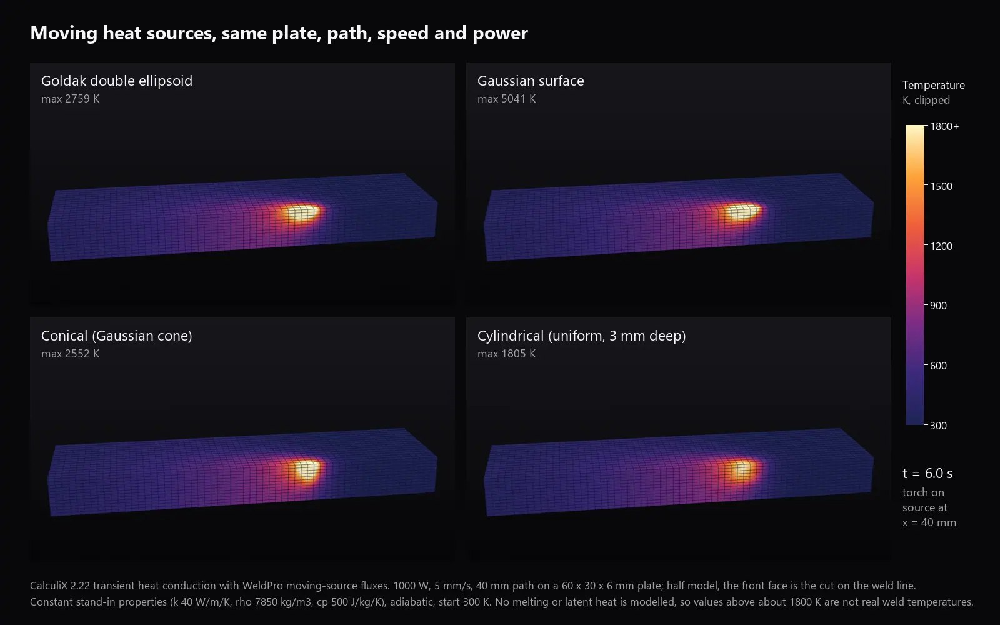

Weld parameters
Arc power from current, voltage and efficiency. A pulsed arc gives each interval its exact mean power.
Products / WeldPro
Describe the torch, the path and the filler. WeldPro moves the heat source across the part, lays the bead as it goes, and hands the temperatures to the stress analysis.

A demonstration: assumed geometry and material, CalculiX thermal run. The deposit temperature is set to give a 1000 C peak, so the peak is an input, not a result.
The mesh receives exactly the power of the model, whatever the element size.

Four CalculiX runs, one per source: 1000 W at 5 mm/s on a 60 x 30 x 6 mm plate, constant stand-in properties, no melting modelled. Peak values depend on the mesh; compare the shapes of the fields.
Arc power from current, voltage and efficiency. A pulsed arc gives each interval its exact mean power.
A line, or an arc through three picked points. A toe point sets the torch axis, which turns along a girth weld.
Filler is removed at the start and added as the torch reaches it. One more action adds the stress steps the weld drives.
The part, the process, the question. We reply with what a study would take and what it would show.